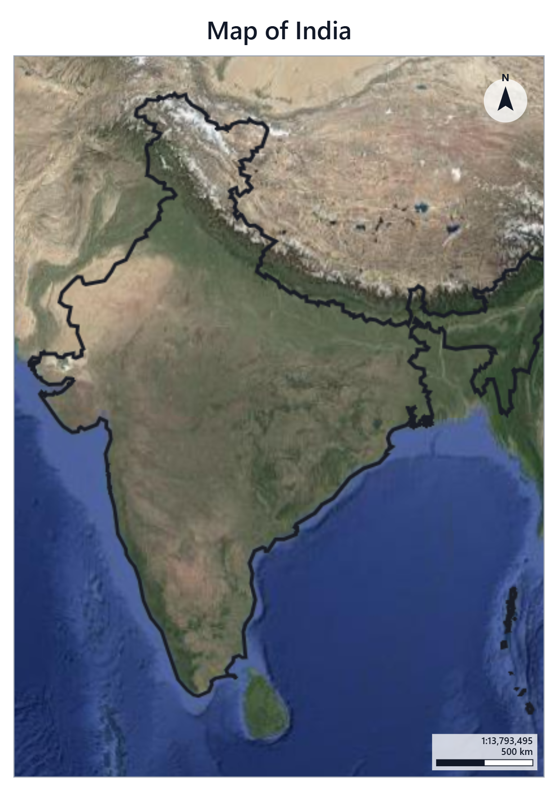

Start here
Remote Sensing & GIS Intro
What satellites are, how they see the Earth, and what GIS software actually does with their photos. A short read before your first map.
Open the PDF Exercise 1Map of India
A step-by-step walkthrough in GeoLibre: load a country outline, style it, switch to a satellite basemap, and export a finished map.
Open the PDF Exercise 2Famous Places of India
Turn a table of landmarks into dots on the map, colour them by type, label them, and measure the distances between them.
Open the PDF Exercise 3Near or Far?
Your first spatial analysis: draw distance zones around your own city and ask the map which famous places fall inside them.
Open the PDF